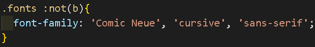
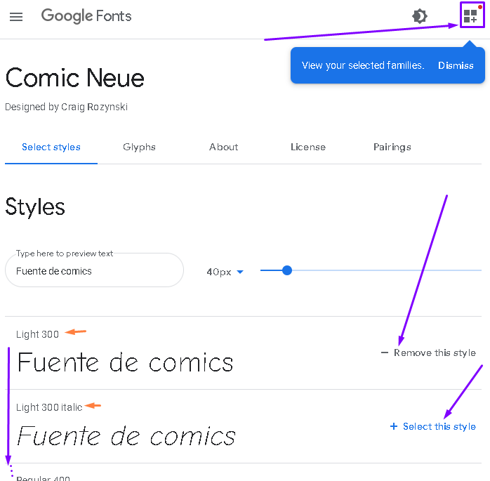
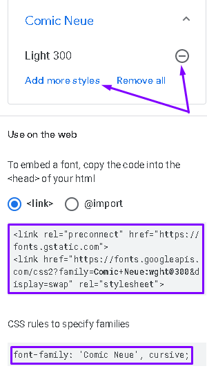

Tipografía
Disciplina que estudia el diseño y uso de tipos de letra.
Fuente
Tipo específico de letra.
Glifos
Trazos que representan a cada caracter de la fuente.
Estilos de fuente
Variaciones de una misma fuente como el grosor o inclinación.
Familia tipográfica
Variaciones de la fuente principal, esas variaciones tienen características similares.
Tipos de fuentes
Serif: (remanentes o terminales) son pequeños adornos ubicados en los extremos de las líneas de los caracteres tipográficos, están destinados para grandes cantidades de información.
Sans serif: (de palo seco o sin gracias) son caracteres que carecen de terminaciones adornadas o remanentes, están destinados a textos cortos.
Display: diseño para su uso en tamaños grandes manteniendo su legibilidad de sus caracteres para visualizarlos a grandes distancias, están destinados a diseño de carteles, grandes titulares, anuncios de prensa, rótulos de grandes dimensiones, etc.
Handwriting: (manuscritas) transmiten la sensación de estar hechas a mano quedando bien con casi todo.
Monospace: (monoespaciado) sus letras y caracteres ocupan exactamente la misma cantidad de espacio horizontal, están destinados para editores de texto en informática o para mostrar secuencias de ácidos nucleicos y proteínas en biología.
Unidades de medida
font-size: #[em | rem]
em proviene del tamaño de la letra eme que antes era el molde tipográfico más ancho que los demás moldes usándolo de referencia para el tamaño de las demás letras.
rem es el tamaño de la letra relativo a la raíz (r de root).
El tamaño estándar de tamaño de fuente es de 16px y no es buena idea cambiarlo. Es recomendable al hacer medidas como márgenes colocarlos de múltiplos de 4 (4, 8, 16,...).
1rem = 16px (siempre que no se modifique el font-size de :root).
Si a un título se le coloca un rem=2 entonces el título tendrá un tamaño de 2*16=32px.
Es bueno utilizarlo en la normalización de los estilos como en todos los p o h2 ejemplo: h2{font-size: 2rem;}.
1em = 100% del tamaño de fuente del contexto.
Si a un párrafo o título se le coloca un texto en span con 2em, el tamaño de ese span será 200% el tamaño del párrafo o título.
Es bueno utilizarlo en las propiedades del modelo de caja porque es conveniente que si varia el tamaño del texto, también varíe su borde o margen o hasta el redondeado de las esquinas.
Nunca se modifican los pixeles de la fuente ya que es mejor que el navegador decida los pixeles dependiendo del tipo de dispositivo en el que se visualiza la página.
Estilos
font-style:[italic | normal | ...]; - Estilos
Se debe comprobar que la versión de fuente que se esté usando tenga itálica porque si no existe la italica de esa letra, el navegador inclinará las letras y las deformará.
font-weight:[bold | 400 | ...]; - grosor
No es buena idea usar bold para darle un grosor a las letras, es mejor darle un numero de grosor (el 400 suele ser el grosor de default), es buena idea verificar los tipos de grosor que existen en el tipo de fuente que se está utilizando.
text-align: [center | left | ...]; - alineación
No se suele utilizar la alineación justificada (justify) por la mala presentación que genera a veces (left es la alineación predeterminada).
line-height: [#em,rem,px,% | # | normal | ...]; - altura de línea o separación
Colocar un numero sin unidades es igual a colocar el numero multiplicado por cien en unidades de porcentaje y a su vez es lo mismo que colocar ese número en unidades rem, es decir:
line-height: 2;
line-height: 200%; (porcentaje del tamaño de fuente)
line-height: 2rem;
Se suele utilizar una separación de 1.5 o 1.6 para párrafos y 1.2 o 1.3 para títulos.
text-decoration: [underline | none | ...]; - subrayados generalmente
text-transform: [capitalize | none | ...]; - transformar mayúsculas o minúsculas
letter-spacing: [+#em,rem,px,% | normal | ...]; - separación entre letras
word-spacing: [+#em,rem,px,% | normal | ...]; - separación entre palabras
Fuentes
font-family: '[fuente]', '[fuente alternativa]';
Se suelen colocar dos o más fuentes alternativas por si no se encuentra la fuente en la web o en el equipo.
La instrucción solamente reconoce las fuentes instaladas en el equipo (en el sistema operativo de cada usuario o propietario) o las vinculadas a través del código html desde otra página web.
A través de páginas como Google fonts se pueden obtener fuentes y estilos de las mismas para descargarlas o usarlas directamente desde la página web "Google fonts" por medio de la etiqueta link, el link que define el vínculo de la fuente se coloca antes de la etiqueta link que define el vínculo del documento CSS para que con el efecto en cascada se obtenga la fuente y después la use a través de CSS, pero al utilizar muchas fuentes en una página puede alentar la carga de la misma.
En Google fonts se seleccionan las fuentes con sus estilos deseados y se abre el panel de "familias seleccionadas", después se copia el link de vinculación el cual se coloca en el documento HTML y también se copia la propiedad CSS que se coloca en el elemento deseado del documento CSS. Con esto cualquier usuario puede ver la fuente ya que se carga a través del código y no a través de un sistema operativo.
Si en el link de vinculación están seleccionadas más de un grosor o estilo de la misma fuente, se puede seleccionar cuál de ellas se desea utilizar.



Sombras de texto
Se utiliza generalmente para crear un efecto de separación o para crear contraste con el fondo.
text-shadow: X Y blur color, X Y blur color, ...;